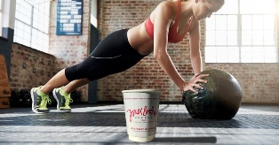

Спорт і кава

Для спортсмена важливо продовжити свою спортивну кар'єру на максимально тривалий термін. Важливо контролювати посилені тренування, і чималу роль у цьому контролі відіграє харчування, дієта. Численні дослідження довели вплив на самопочуття спортсмена кофеїну, який є хорошим стимулятором.Отримані результати довели, що кофеїн підвищує здатність концентрації уваги на спортивних виступах, і надає на спортсмена інші корисні дії. Кофеїн розщеплює жир, знімає м'язову стомлюваність, поліпшує розумову і фізичну енергію.Науково доведено при прийомі невеликої кількості кофеїну покращується опірність організму, особливо при бігу підтюпцем, заняттям велоспортом і лижами. Так що, якщо ваша кавоварка зламалася, ремонт кавової машини доведеться як не можна до речі, адже чашка кави не тільки бадьорить з ранку і перед тренуванням, але й, як з'ясовується додає сил і витривалості. Правда в деяких випадках висновки вчених не завжди узгоджені, але в одному вони єдині, перед тренуванням спортсмен може собі дозволити випити чашечку кави.Кофеїн, що отримується організмом в невеликих дозах, впливає на енергетичний баланс, спалює жирові клітини. Вживання кави може допомогти огрядним людям, якщо пити його без вершків і цукру, в каві міститься тільки дві калорії. Для тих, хто займається спортом вживання кави в нормальних дозах навіть корисне, і це цілком сумісне зі спортивної активністю.